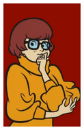

Selecione um personagem
- 
Scoobby Doo
Scoobert Doo é um cão que foi adotado e cuidado pelo Salsicha desde novinho, e os dois acabaram se tornando melhores amigos com vários traços de personalidade parecidas, por exemplo, ficar facilmente assustados. A equipe o icentiva a ir atrás dos bandidos com Biscoitos Scooby.